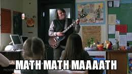

This website is a final project of sorts in which we display our capabilities with Hyper Text Markup Language, Cascading Style Sheets and Javascript. This website can be used as a resource for calculus to learn as well as to quiz yourself on formulas you may come across.
